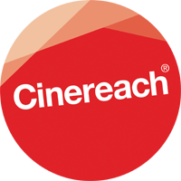
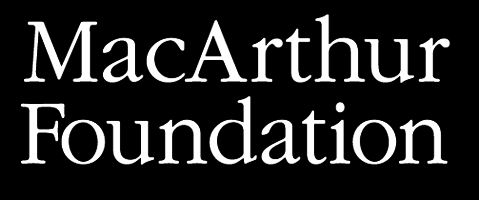
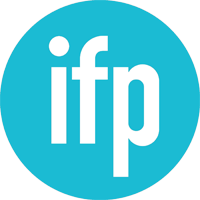
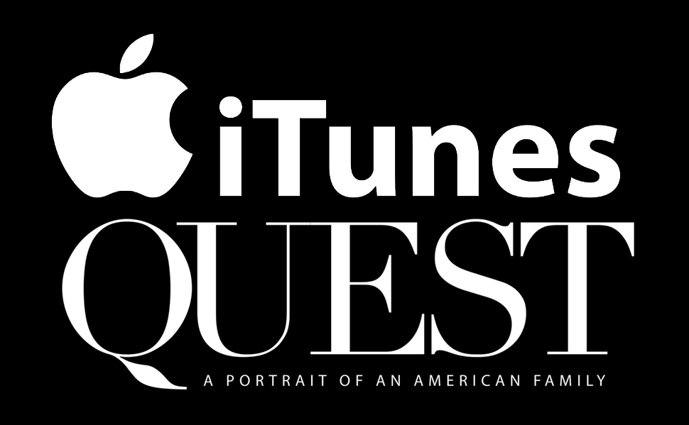
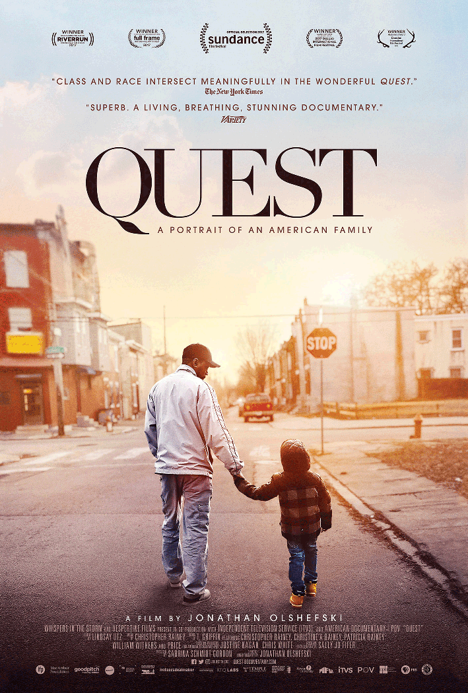
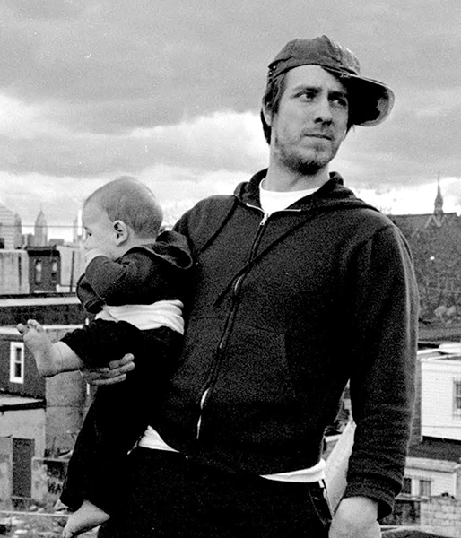

QUEST
A Portrait of an American Family
- 
- 
- 
See the Film
Available For Purchase Now! Itunes Store
Theatrical Release
U.S. Distributor: First Run Features
Winchester, VA | February 7, 2018 | Alamo Drafthouse
St. Louis, MO | February 9 - 11, 2018 | Webster Film Series
Bloomington, IN | February 17 - March 4, 2018 | The Ryder
Orlando, FL | February 18, 2018 | Enzian Theater
Dayton, OH | February 24, 2018 | The Neon
Austin, TX | February 25 & 27, 2018 | Austin Film Society
Portland, OR | March 9 - 11, 2018 | Northwest Film Center
Potsdam, NY | March 26, 2018 | Roxy Theater
Charlotte, NC | April 12, 2018 | Sensoria Arts Festival
Book the Film
United States - First Run Features
Canada - Films We Like
United Kingdom - Dogwoof
Scandanavia / Benelux - Nonstop Entertainment
Australia / New Zealand - Madman Entertainment
Rest of the World - The Film Collaborative

About
An intimate documentary film that captures ten years in the life of a family living in North Philadelphia.
Synopsis: Filmed with vérité intimacy for nearly a decade, QUEST is the moving portrait of the Rainey family living in North Philadelphia. Beginning at the dawn of the Obama presidency, Christopher "Quest" Rainey, and his wife, Christine'a "Ma Quest" raise a family while nurturing a community of hip hop artists in their home music studio. It's a safe space where all are welcome, but this creative sanctuary can't always shield them from the strife that grips their neighborhood. Epic in scope, QUEST is a vivid illumination of race and class in America, and a testament to love, healing and hope.
World Premiere: U.S. Documentary Competition at the 2017 Sundance Film Festival.
Opening theatrically in the December 2017.
Contact Us: questfurysound@gmail.com
Note From Director
November 1, 2017
Hi QUEST followers,
It has been an incredible year! I am very proud of the honors and accolades that QUEST has received, but the thing I value the most are the relationships. Festivals and critics often describe the film as a labor of love, but I have to say that I have been on the receiving end for a lot of it. Beginning with the Rainey family and the North Philadelphia community. To funders and supporters who cleared a path to get the film made. To the amazing film team who invested their hearts and souls along with their talents to craft the film. To audiences who experience the love in the story and reflect it back.
I make films to make friends and it has been amazing to meet so many cool new people and to go deeper with partners that have been a part of this journey for a long time. Attending screenings has been super rewarding as I am able to witness the impact that the Rainey family's story has on audiences. The Raineys have been able to attend a number of festivals/screenings across the country and they have really been moved by the warmth and kindness they have received at these events. People often approach us after a screening to share their connection to moments in the film that relate to their own personal stories. These exchanges have been unforgettable.
I hope that, beyond building an initial connection with viewers, the film will spark real commitment to support and embrace communities like North Philadelphia. We are developing an impact and engagement campaign around the film to create a context for this to happen and we are looking for individuals and organizations to partner with us in this effort.
Every independent film needs champions to get made and I am so grateful to everyone who made this film possible. Now we need champions to help us get the word out so that we can bring this important story to more people. Thank you for being a part of this.
xo,
Jonathan Olshefski aka Peter Parker

Select Reviews
Critic's Pick. An intimate and patient portrait of a North Philadelphia family [...] I’ve rarely seen a movie about citizenship as quietly eloquent as "Quest."
- New York Times
Radiant filmmaking debut [...] the director discovers an everyday American story of extraordinary strength.
- LA Times
Superb. A living, breathing, stunning documentary.
- Variety
Recalls Steve James' Hoop Dreams in both the way it captures people over a long period of a time and in how it finds the profound in the everyday, the universal in the specific.
- RogerEbert.com
A sweeping and intimate documentary about the struggles of an average American family.
- Indiewire
Quest may be one of the most important films about the American experience ever filmed."
-POV Magazine
"This is loving, humane stuff, with the richness of a fat novel"
-Sight and Sound
"A testament to the powers of family and individual kindness"
-Hollywood Reporter
"One of the most beautiful, moving portraits of a family committed to the screen in recent memory"
-Moveable Fest
Festivals and Awards
Awards
Winner: Reva and David Logan Grand Jury Award - Full Frame Documentary Film Festival
Winner: Kathleen Bryan Edwards Award for Human Rights - Full Frame Documentary Film Festival
Winner: Grand Jury Award for Best Feature Documentary - Dallas International Film Festival
Winner: Grand Jury Award for Best Feature Documentary - RiverRun International Film Festival
Winner: Les Blank Award: Grand Jury Award for Best Feature Documentary - Ashland Independent Film Festival
Winner: People's Voice Award - Fist Up Film Festival
Honorable Mention: Grand Jury Prize Documentary Feature - Cleveland International Film Festival
Honorable Mention: Grand Jury Prize Documentary Feature - Nashville Film Festival
Winner: Audience Award - Camden International Film Festival
Winner: Best Documentary Feature - Baltimore International Black Film Festival
Winner: Best U.S. Documentary - Hot Springs Documentary Film Festival
Winner: Documentary Jury Award - Milwaukee Film Festival
Winner: Silver Gateway Award for Second Best Film - Mumbai Film Festival
Winner: Critics Choice Award - Key West Film Festival
Winner: Outstanding Achievement in Editing - Cinema Eye Honors
Honoree: Unforgettables List - Cinema Eye Honors
Official Nominee: Outstanding Achievement in Nonfiction Feature Filmmaking - Cinema Eye Honors
Official Nominee: Audience Choice Prize - Cinema Eye Honors
Winner: Truer Than Fiction Award - Independent Spirit Awards
Official Nominee: Best Documentary - Independent Spirit Awards
Select Festivals
• Sundance Film Festival, January 19 – 29, 2017
• True/False Film Festival, March 2 – 5, 2017
• New Directors/New Films, March 16 – 27, 2017
• Full Frame Documentary Film Festival, April 6 – 9, 2017
• Cleveland International Film Festival, March 29 – April 9, 2017
• Ashland Independent Film Festival, April 6 – 10, 2017
• Dallas International Film Festival, March 30 – April 9, 2017
• RiverRun International Film Festival, March 30 – April 9, 2017
• Hot Docs, Toronto Canada, April 27 – May 7, 2017
• Seattle International Film Festival, May 18 – June 11, 2017
• Sheffield Doc/Fest, Sheffield England, June 9 – 14, 2017
• AFI Docs, Washington DC, June 14 – 18, 2017
• Nantucket Film Festival, June 21 – 26, 2017
• Outfest: LGBT Film Festival, Los Angeles CA, July 11, 2017
• Guanajuato International Film Festival, San Miguel, Mexico, July 21 – 30, 2017
• Traverse City Film Festival, Traverse City MI, July 26 – 27, 2017
• New Zealand International Film Festival, July 20 – August 13, 2017
• Camden International Film Festival, Camden Maine, September 14 – 17, 2017
• DMZ International Documentary Film Festival, Goyang and Paju City, South Korea, September 21 – 28, 2017
• Zurich Film Festival, Zurich Switzerland, September 28 – October 8, 2017
• Milwaukee Film Festival, Milwaukee WI, September 28 – October 12, 2017
• Hot Springs Documentary Film Festival, Hot Springs AR, October 6 – 15, 2017
• New Orleans Film Festival, New Orleans LA, October 11 – 19, 2017
• Mumbai Film Festival, Mumbai India, October 12 - 18, 2017
View complete festival list here
Select Press
• Philadelphia Inquirer, Mike Newall, A portrait of a family and a window into the city, February 14, 2016
• Sundance Institute, staff, 2017 Sundance Film Festival: Competition And Next Lineup Announced, November 29, 2016
• Indiewire, Steve Greene, Sundance 2017 IndieWire Critics Poll Results: Best Documentary, January 21, 2017 (QUEST ranked #2)
• Indiewire, Chris O’Falt, ‘QUEST’: How a Photo Essay Turned into a Documentary About 8 Years in the Life of a North Philly Family, January 23, 2017
• Filmmaker Magazine, Staff, “I Became Like Furniture”: Director/DP Jonathan Olshefski on QUEST, January 25, 2017
• Birth Death Movies, Jason Gorber, Sundance Interview: QUEST’s Jonathan Olshefski And Sabrina Schmidt Gordon. How a ten-year-journey become of of this Sundance's best documentaries, January 30, 2017
• Roger Ebert.com, Sasha Kohan, Sundance 2017 Interview: The Filmmakers of “QUEST”, January, 30, 2017
• Indiewire, Chris O’Falt, One-Person Crew: The Pros and Cons of Making a Documentary By Yourself, March 27, 2017
• The Duke Chronicle, Nina Wilder, Full Frame 2017: Interview with the cast and crew of ‘QUEST’, April 12, 2017
• Hot Docs Jots, staff, Director Jonathan Olshefski and Producer Sabrina Schmidt Gordon discuss process in QUEST, April 25, 2017
• PDN Photo District News, Holly Stuart Hughes, An American Family/First-Time Director Jonathan Olshefski on Creating a Feature-Length Documentary, June 2017
• Art Forum, Amy Taubin, Everyday People: Jonathan Olshefski’s Documentary Portrait of an American Family in Philadelphia, Summer 2017
• Full Frame, staff, Director Jonathan Olshefski on QUEST, August 31, 2017
• Filmmaker Magazine, Vadim Rizov, 25 New Faces of Independent Film, Fall 2017
• Cinema Eye Honors, Cinema Eye Honors Announces the 2017 Unforgettables, October 18, 2017
• Independent Spirit Awards, Drumroll. And the 2018 Film Independent Spirit Award Nominees are…, November 21, 2017
Team
Jonathan Olshefski (Director)
Jonathan Olshefski is an artist and documentary filmmaker.
In 2017 he was named as one of 25 New Faces in Independent Film by Filmmaker Magazine and mentioned in the New York Times as one of “The 9 New Directors You Need to Watch.”
His debut feature documentary, QUEST, premiered in competition at the 2017 Sundance Film Festival and went on to be selected for over 75 festivals internationally where it won multiple awards.
Olshefski strives to tell intimate and nuanced stories that honor his subjects’ complexity by employing a production process that emphasizes collaboration, dialogue, and relationship to amplify their voices and reflect their points of view in an artful way.
He has an MFA in Film and Media Arts from Temple University and is an Associate Professor at Rowan University where he teaches in the department of Radio, TV, and Film. He lives in Philadelphia with his wife and two sons.
You can view his portfolio here: olshefski.org
.Sabrina Schmidt Gordon (Producer)
Sabrina Schmidt Gordon is an award-winning documentary filmmaker. Her editing debut won an Emmy for WGBH’s “Greater Boston Arts” series and she has continued to distinguish herself as a producer, editor, and now, director. She is the Co-Director/Producer and Editor of BaddDDD Sonia Sanchez, winner of Best Film Directed by a Woman of Color at the 2015 African Diaspora International Film Festival. Sabrina is also the Co-Producer and Editor of DOCUMENTED, the story of Pulitzer Prize-winning undocumented journalist, Jose Antonio Vargas. The film had record viewership for its CNN broadcast, received Oscar buzz, and was nominated for the NAACP Image Award for Best Documentary Film. Other credits include Hip-Hop: Beyond Beats and Rhymes, which premiered at the Sundance Film Festival and was named in the Chicago Tribune’s “Best Documentaries of 2007, The New Black, and The New Mad Men, which won the 2015 Imagen Award for Best National Informational Program. Sabrina is on the board of the Yale Visual Law Project with Fred Wiseman and Alex Gibney, and teaches documentary filmmaking at the Columbia University School of Journalism and the CUNY Graduate School of Journalism.
Lindsay Utz (Editor)
Lindsay Utz edited the award-winning documentary Bully, which was released nationally in 2012, and was shortlisted for an Academy Award for Best Documentary. Most recently she edited the Sundance supported In Country, about a group of veterans reenacting the Vietnam War in the woods of Oregon, which had its 2014 premiere at Full Frame Documentary Festival and was named as one of POV’s top 5 films at Hot Docs. Along with the directors of In Country, she was named by The Independent as one of 10 Filmmakers to Watch in 2014.
Utz’s work also includes the ballet documentary First Position, which premiered at the Toronto International Film Festival in 2011, the experimental feature Buoy, executive produced by Todd Haynes, and multiple pieces for the NYTimes Op-Docs series. In addition to working as a full time editor, she teaches documentary editing at Northwestern University. In 2012, Utz was awarded the Karen Schmeer Film Editing Fellowship in honor of Errol Morris’ late editor.
Donate
All donations are tax deductible if made through our fiscal sponsor:
QUEST is a sponsored project of IFP (www.ifp.org)
Mailing List
Please join our mailing list for exclusive information and opportunities.